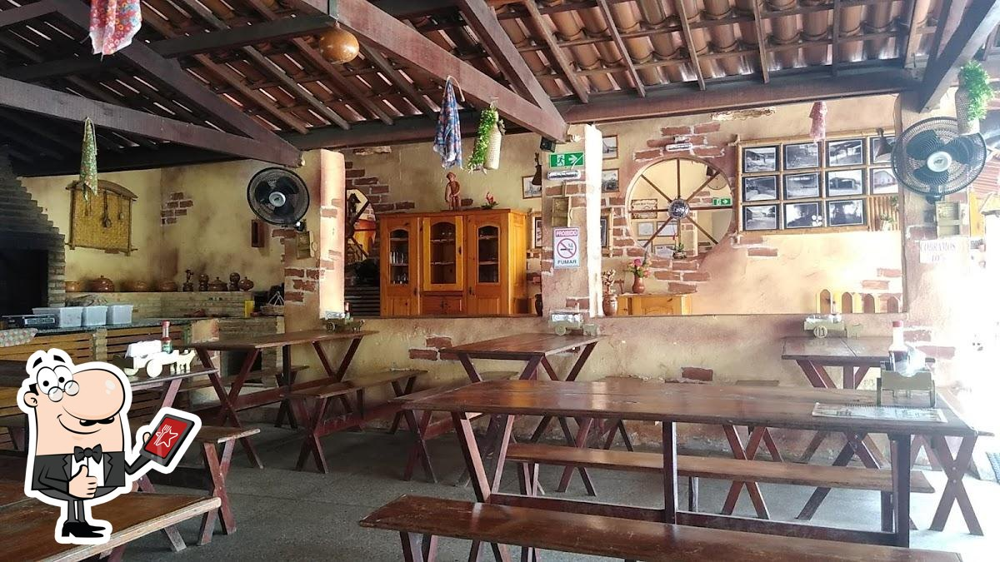
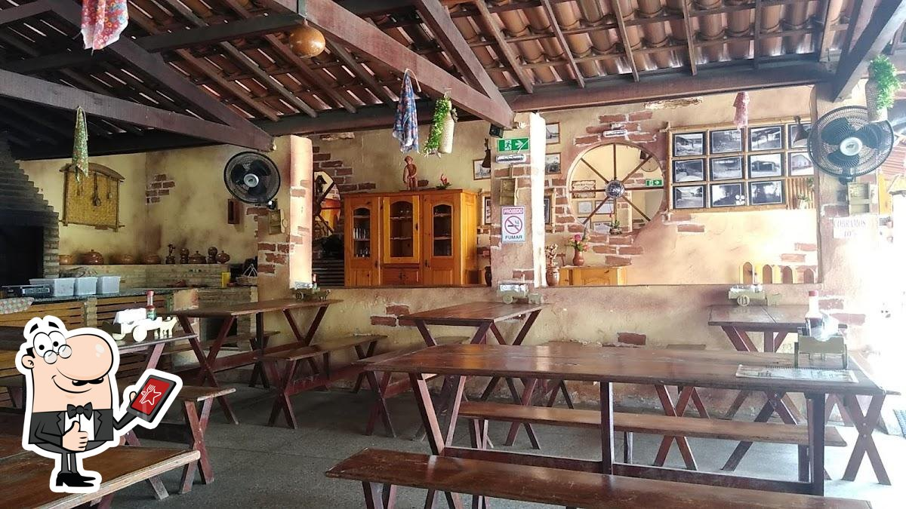
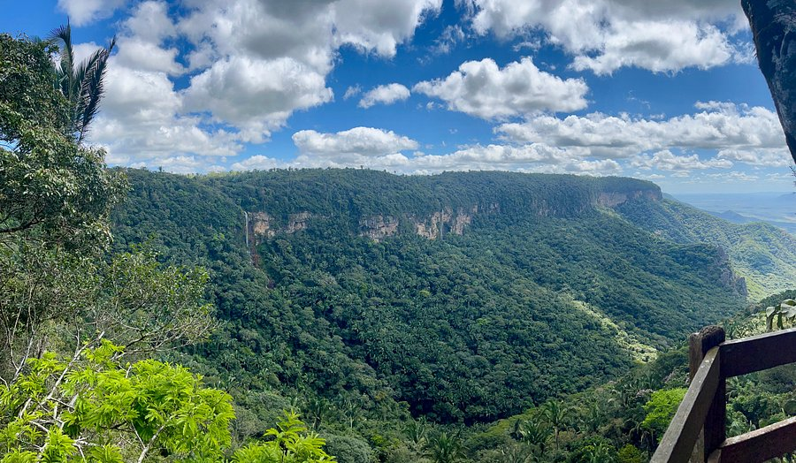
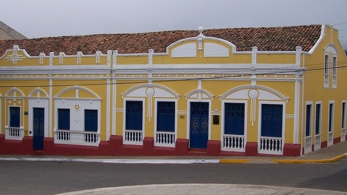
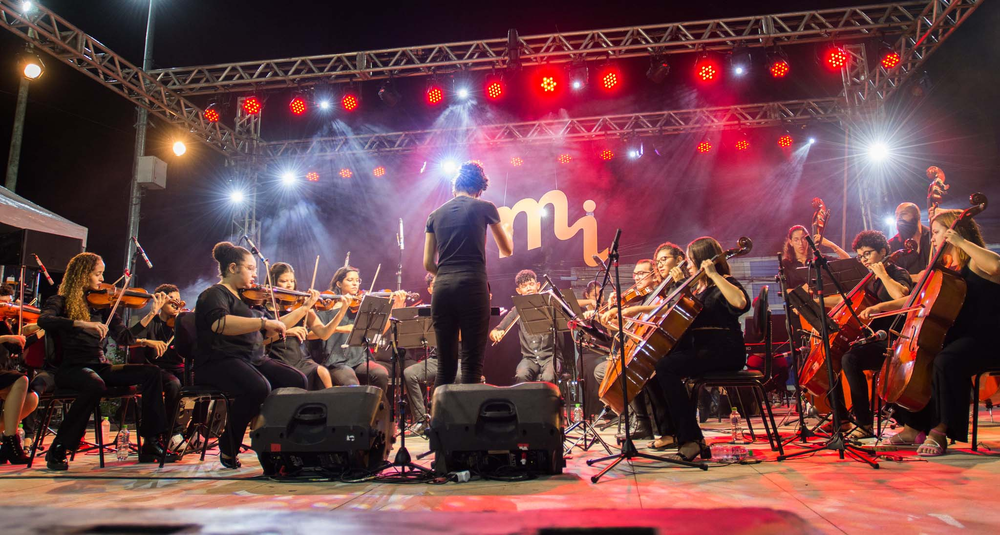
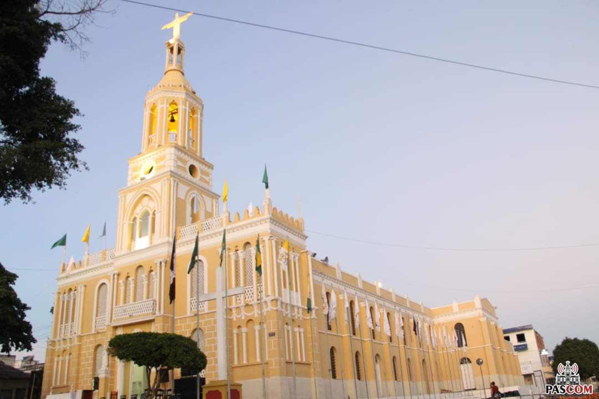
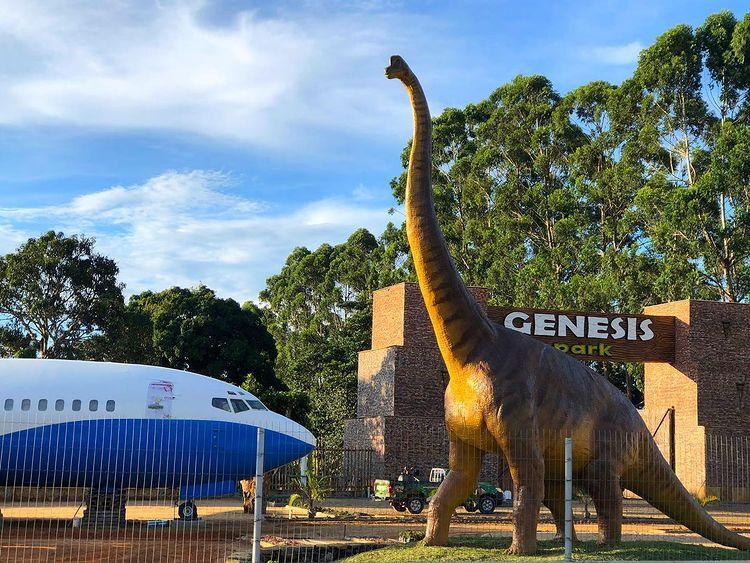

Bares e Restaurantes
Locais para apreciar boa comida e música.
Descubra os atrativos da serra e planeje sua visita.
Você pode encontrar por aqui:
Locais para apreciar boa comida e música.
Cachoeiras, mirantes e trilhas deslumbrantes.
Casas antigas e igrejas centenárias.
Festas tradicionais e manifestações artísticas.
Locais de fé e celebrações religiosas.
Outras opções de lazer e entretenimento.
